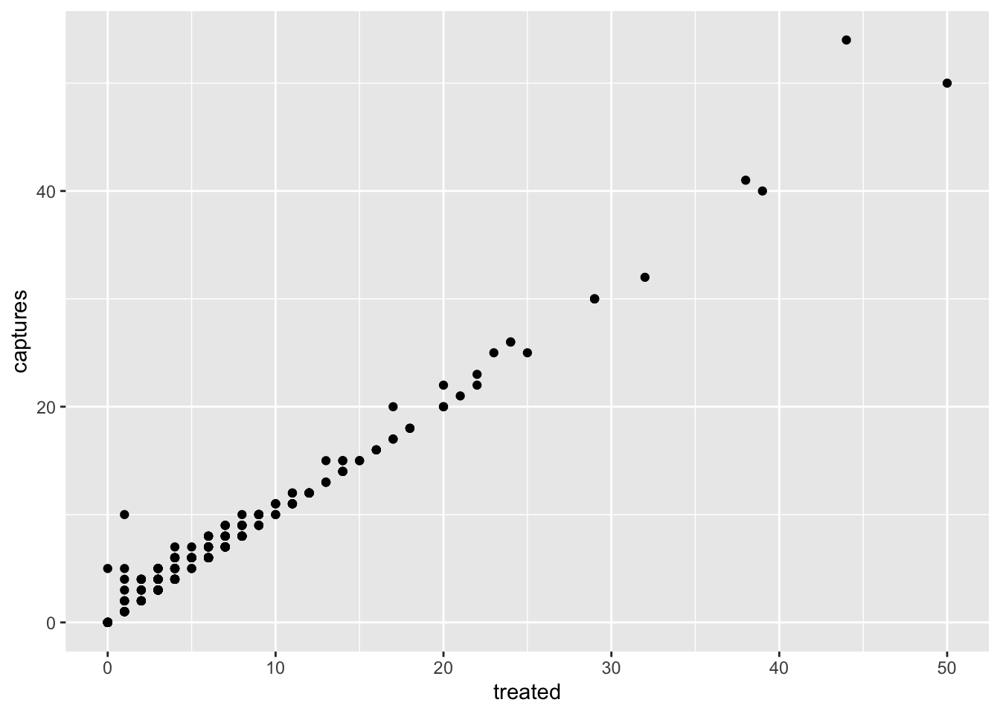

Introdução à visualização de dados com ggplot2
Pablo Gomez
2023-07-05
# Carregar os pacotes
library(ggplot2) # para gráficos
library(dplyr) # Para manipulação de dados
library(STNet) # biblioteca com conjuntos de dados
# carregando dados do pacote
data('captures') # carregamos os dados
head(captures) # vamos dar uma olhada nos dados## municipality location Loc date year captures
## 1 Temascaltepec San Pedro Tenayac Cueva el Uno 11/06/14 2014 6
## 2 Tlatlaya Nuevo Copaltepec La alcantarilla 12/05/05 2005 3
## 3 Tlatlaya Nuevo Copaltepec La alcantarilla 12/05/07 2007 30
## 4 Tlatlaya Nuevo Copaltepec La alcantarilla 12/03/09 2009 0
## 5 Tlatlaya Nuevo Copaltepec La alcantarilla 10/08/10 2010 4
## 6 Tlatlaya Nuevo Copaltepec La alcantarilla 16/05/11 2011 4
## treated lat lon trap_type
## 1 6 18.03546 -100.2095 1
## 2 2 18.40417 -100.2688 1
## 3 29 18.40417 -100.2688 4
## 4 0 18.40417 -100.2688 3
## 5 3 18.40417 -100.2688 1
## 6 3 18.40417 -100.2688 21 Gráficos no R
Por padrão, o R já possui um conjunto de funções para criar uma
variedade de gráficos, mas o código pode se tornar bastante complexo e
difícil de ler à medida que produzimos gráficos mais detalhados. O
ggplot2 é uma biblioteca que fornece um conjunto de funções
para produzir uma variedade de gráficos.
A função ggplot() deve ser chamada no início da
definição do gráfico, essa função cria um espaço em branco para o nosso
gráfico. Se chamarmos a função sem argumentos, veremos apenas o espaço
em branco, por exemplo:
ggplot()
Em seguida, podemos adicionar camadas ao nosso espaço em branco com
base nos dados que queremos visualizar, de forma semelhante aos pipes,
conectaremos as diferentes camadas do nosso gráfico com o operador
+.
Os componentes básicos que precisamos definir para um gráfico são os seguintes:
- data, o conjunto de dados que usaremos para gerar o gráfico
- geometry, ou tipo de gráfico que geraremos (por exemplo: histograma, barra, dispersão, etc.)
- aesthetic, variáveis ou argumentos que serão usados para o gráfico, por exemplo: localização, cor, tamanho, etc.
Um exemplo:
ggplot(data = captures) + # Este é o conjunto de dados que usaremos
geom_histogram( # Este é o tipo de gráfico (geometry)
aes(x = treated) # (geometry) Neste caso inclui apenas uma variável representando o eixo x
)
Outros componentes dos gráficos podem ser definidos para personalizar
ainda mais nossas figuras, e abordaremos esses detalhes mais
adiante.
Como você observou no exemplo anterior, podemos visualizar os gráficos
diretamente no console do R, mas uma maneira que gosto de organizar os
gráficos é colocá-los todos dentro de um único objeto no R. Esse objeto
pode ser uma list, que é apenas um contêiner para outros
objetos.
# Para criar uma lista vazia, podemos usar a função list()
figures <- list()2 Visualizando distribuições
2.1 Variáveis contínuas
2.1.1 Histogramas
A forma mais simples de visualizar a distribuição de uma variável contínua é usando um histograma. Histogramas são um tipo especial de gráfico de barras onde nossa variável é agrupada em canais (bins) e mostrando as contagens para cada canal. Agora que temos nosso contêiner de listas para os gráficos, podemos simplesmente salvá-lo lá e atribuir um nome que desejamos.
Observe que vamos combinar os pipes com a sintaxe do ggplot. Você pode definir o nome dos dados na função ggplot ou antes da função e conectá-lo com um pipe.
figures$histogram <- captures %>% # Estes são os dados que usamos.
ggplot() + # Definimos o espaço em branco
geom_histogram(aes(x = treated)) # adicionamos uma camada para visualizar um histograma
# Podemos ver nosso gráfico chamando o nome em nosso contêiner de listas
figures$histogram
2.1.2 Boxplots
Boxplots são ótimos para mostrar a distribuição de uma variável contínua. Podemos usá-lo para mostrar apenas uma variável ou várias variáveis. É importante produzir gráficos com boa descrição, a ideia de um gráfico é que ele possa se explicar sozinho. Vamos começar a introduzir lentamente funções para fazer isso e personalizar nossos gráficos.
# Only one variable
figures$box <- captures %>%
ggplot() +
geom_boxplot(aes(y = treated))
figures$box ## Variáveis categóricas
## Variáveis categóricas
2.1.3 Gráficos de Pizza… ?
Gráficos de pizza não são tão diretos no ggplot, não existe uma
função geom_pie. Para fazer isso, você pode essencialmente fazer um
gráfico de barras com algumas especificações e depois usar a função
coord_polar(), que converterá as coordenadas da figura.
captures %>% count(municipality) %>%
ggplot() +
geom_bar(aes(x = 'municipality', y = n, fill = municipality), stat = 'identity') +
coord_polar('y') +
theme_void()
Você pode estar se perguntando por que não há geom_pie no ggplot… Apesar de os gráficos de pizza serem um dos gráficos mais comuns na mídia para dados categóricos, eles têm sido criticados por serem difíceis de interpretar ao analisar distribuições, especialmente quando a distribuição da variável é uniforme. Você pode avaliar isso por si mesmo na figura a seguir:

{kind=link}
Algumas alternativas aos gráficos de pizza incluem gráficos de mosaico e de barras.
2.2 Mosaico
A principal desvantagem dos gráficos de mosaico é que não há uma
função específica na biblioteca ggplot2 para criar esse
tipo de gráfico, o que significa que ele não se integra tão bem com
algumas das funções que usaremos neste workshop. Podemos usar outra
biblioteca (treemap) para gerar esse gráfico. Usaremos a
função treemap() da mesma biblioteca:
library(treemap) # carregar a biblioteca
captures %>% # Esses são nossos dados
count(municipality, captures) %>% # contamos o número de capturas
treemap(
., #Declara nossos dados como o resultado da linha anterior
index = 'municipality', # A variável índice
vSize = 'n' # Variável que indica a frequência por categoria
)
captures %>% # this is our data
count(municipality, captures) %>% # we count the number of captures
treemap(
., # This is our data
index = 'municipality', # The index variable
vSize = 'n' # Variable that indicates the frequency per category
)Treemaps (ou mosaicos) podem incluir várias hierarquias
captures %>%
count(municipality, location, captures) %>%
treemap(., index = c('municipality', 'location'), vSize = 'n')
2.3 Gráficos de barras
Gráficos de barras são ótimos para representar frequências de categorias. No exemplo a seguir, contaremos o número de tratamentos por ano e, em seguida, visualizaremos em um gráfico de barras.
figures$bars <- captures %>%
count(municipality) %>%
ggplot() +
geom_bar(aes(
x = n, # Eixo X
y = municipality # Eixo Y
), stat = 'identity') # Tipo de gráfico de barras
figures$bars
Podemos adicionar variáveis extras para indicar a composição (usando
outra variável) de cada uma das categorias em nossos gráficos. Por
exemplo, adicionaremos a variável trap_type para colorir as
barras nesse gráfico. Para fazer isso, adicionamos o argumento
fill = factor(trap_type) à nossa função
aes().
figures$bars <- captures %>%
count(municipality, trap_type) %>%
ggplot() +
geom_bar(aes(
y = municipality, # Eixo Y
x = n, # Eixo X
fill = factor(trap_type) # Variável usada para preenchimento
), stat = 'identity') # tipo de gráfico de barras
figures$bars
Existem diferentes estratégias para visualizar isso, outro exemplo seria dividir a composição em barras individuais, como no seguinte gráfico. Isso pode ser útil para comparar a composição dentro do grupo:
captures %>%
count(municipality, trap_type) %>%
ggplot() +
geom_bar(aes(
y = municipality,
x = n,
fill = factor(trap_type)
), stat = 'identity', position = 'dodge') # tipo de gráfico de barras
Outra opção é visualizar a composição como uma proporção, adicionando
o argumento position = 'fill' à função
geom_bar(). Observe que isso remove o sentido do número de
observações para a categoria principal (year):
captures %>%
count(municipality, trap_type) %>%
ggplot() +
geom_bar(aes(
y = municipality,
x = n,
fill = factor(trap_type)
), stat = 'identity',
position = 'fill') # tipo de gráfico de barras
3 Visualizando relações entre variáveis
3.1 Gráficos de dispersão
Este é um dos tipos mais populares de gráficos, útil para representar a relação entre duas variáveis contínuas.
figures$scatter <- captures %>% # primeiro começamos com o nome do nosso data.frame
ggplot() + # em seguida, configuramos a tela (ou canvas)
geom_point(aes(x = treated, y = captures)) # e adicionamos uma camada de pontos
figures$scatter
3.2 Mapas de Calor
Mapas de calor (ou heatmaps) representam a frequência (ou outros valores) para uma combinação de variáveis em uma matriz. Por exemplo, podemos visualizar a frequência de capturas por tipo de armadilha para cada um dos municípios em nossos dados:
figures$heatmap <- captures %>% # Dados que estamos utilizando
count(municipality, trap_type) %>% # Contagem por municipio e tipo de armadilha
ggplot() +
geom_tile(aes(
y = municipality, # eixo y
x = factor(trap_type), # eixo x
fill = n # Preenchimento para cada célula
))
figures$heatmap
3.3 Boxplots (novamente…)
# Apenas uma variável
figures$box <- captures %>%
ggplot() +
geom_boxplot(aes(x = treated, y = municipality))
figures$box
4 Séries temporais
Para criar uma série temporal, precisamos reformatar um pouco os
dados para que o R possa fazer o que queremos. Vamos introduzir um novo
tipo de variável: date. A variável de data é basicamente o
que parece, é uma variável que tem um formato com ano, mês e dia;
existem outras formas de formatar datas no R, mas esta é a mais comum e
direta.
tCaptures <- captures %>%
mutate(date = as.Date(date, "%d/%m/%y"), # Primeiro, formataremos a data
month = lubridate::floor_date(date, 'month')) %>% # Em seguida, criaremos uma variável formatando a data como mês do ano
count(month) # Contar o número de observações por mêsAgora que temos nossas variáveis no formato correto, podemos usá-las como qualquer outra variável.
figures$timeseries <- tCaptures %>%
ggplot() +
geom_line(aes(x = month, y = n))
figures$timeseries